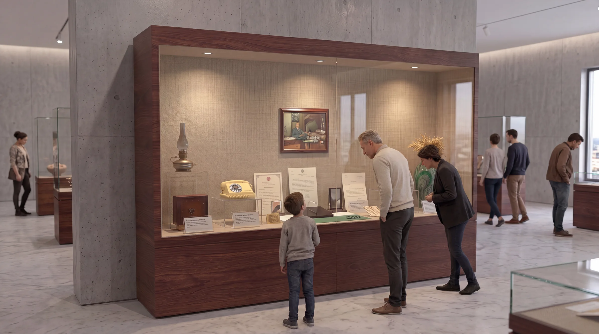
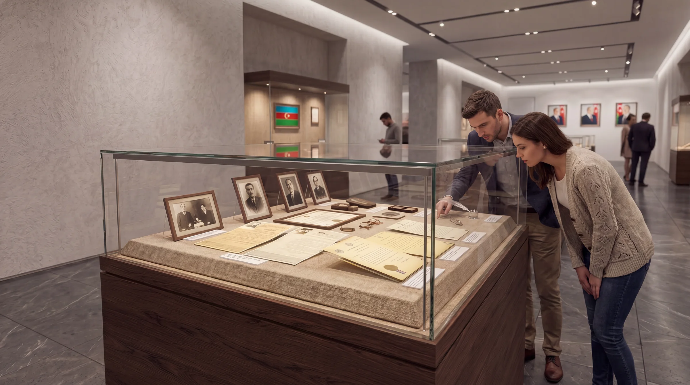
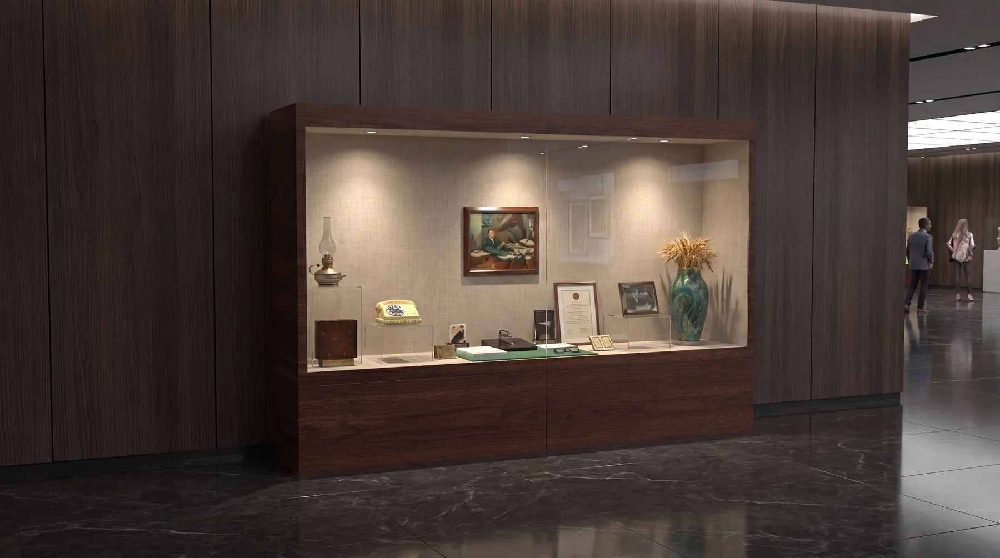
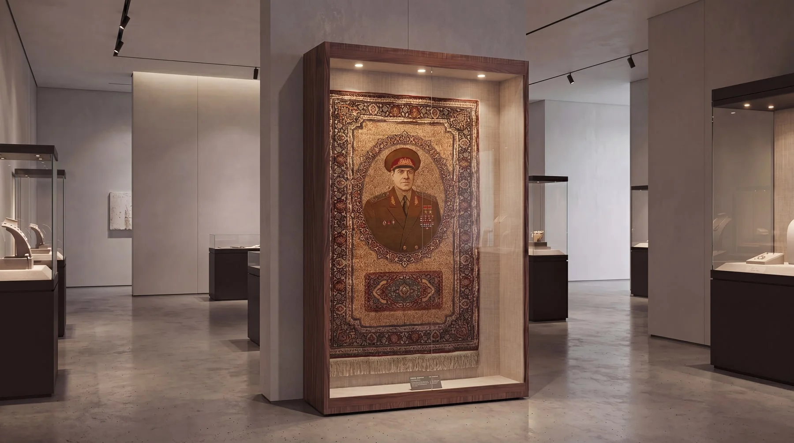
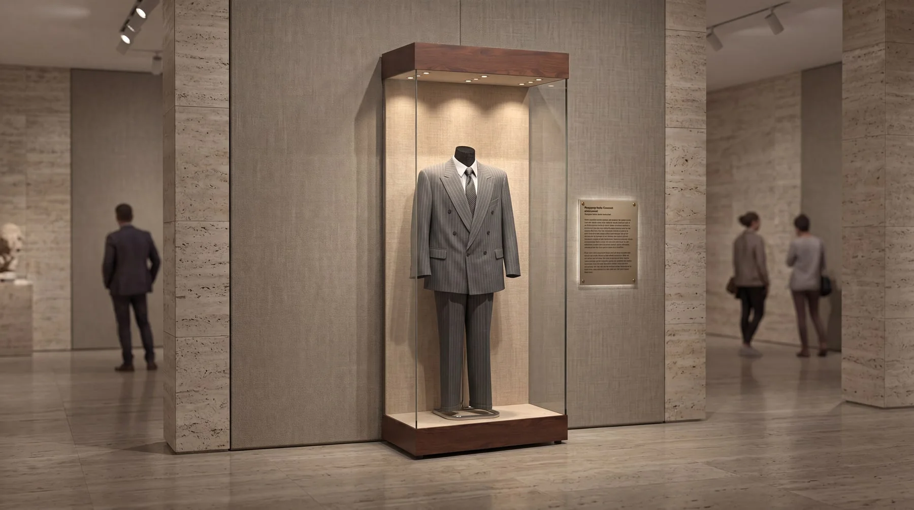
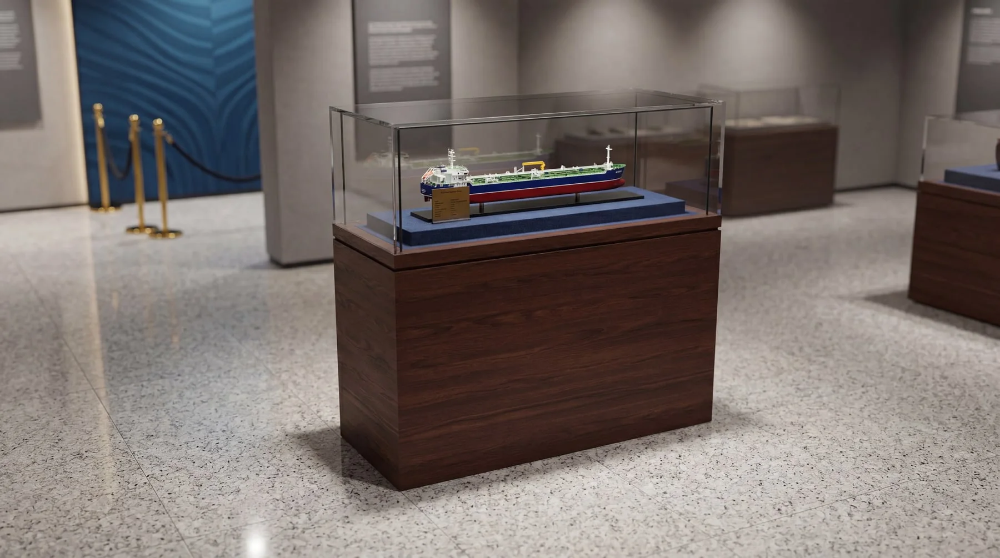
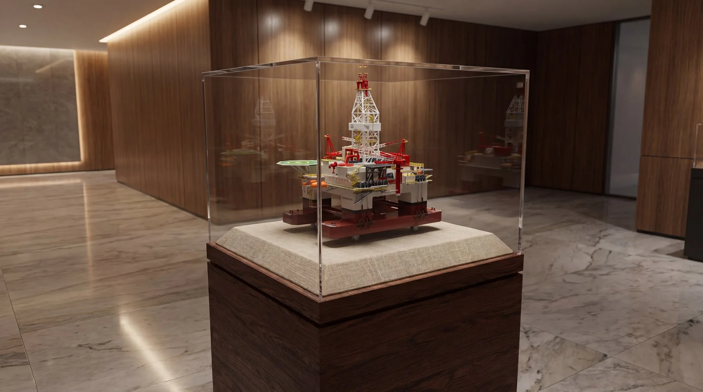
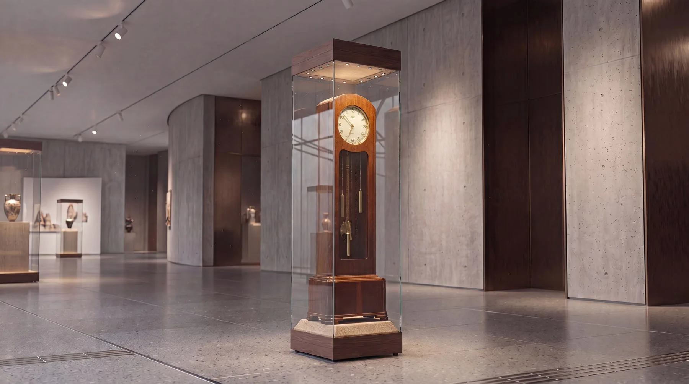
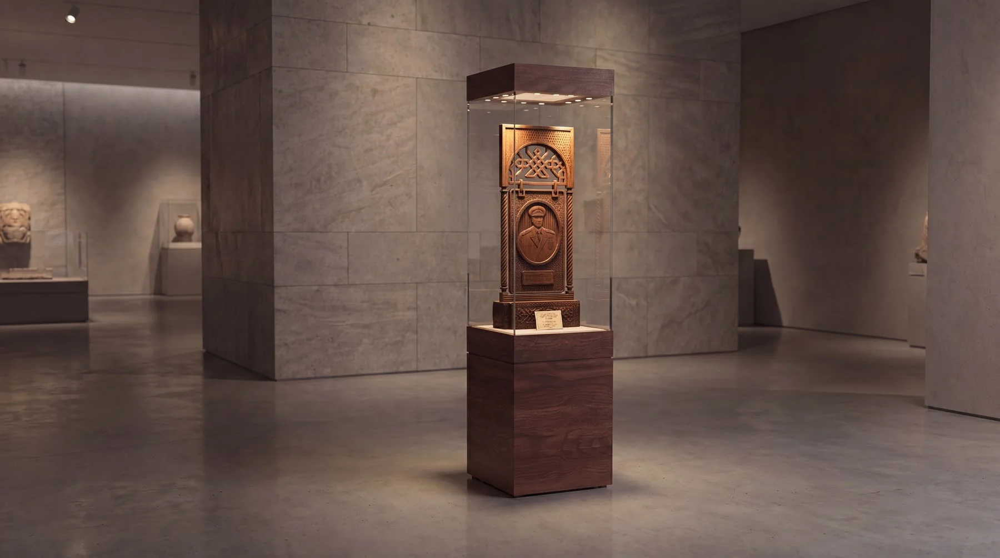

Galeride bir aile
Vitrinler tek tek değil, bir galeri aksı boyunca birlikte düşünüldü. Ceviz kaide, ince çerçeveli cam ve gizli ışık her tipte tekrar ettiği için salon tek bir sistem gibi okunur.



Duvar vitrinleri
Belge, tekstil ve kostüm gibi dik okunan eserler duvara yaslanan derin kasalarda sergilenir. Işık üst profilde gizlenir, arka yüzeydeki keten doku eseri sakin bir zemine oturtur.



Masa, kaide ve sütun
Odanın ortasındaki eserler için yükseklik eserin ölçüsüne göre değişir: model için alçak masa ve kaide, saat ve tekil eser için çevresinden dolaşılan uzun sütun.



